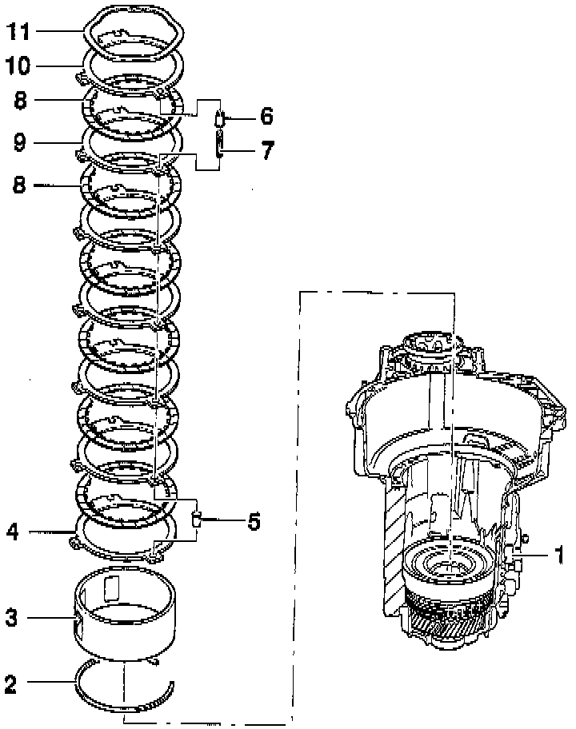
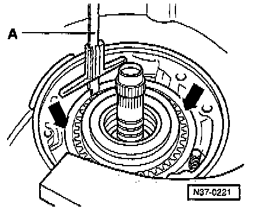
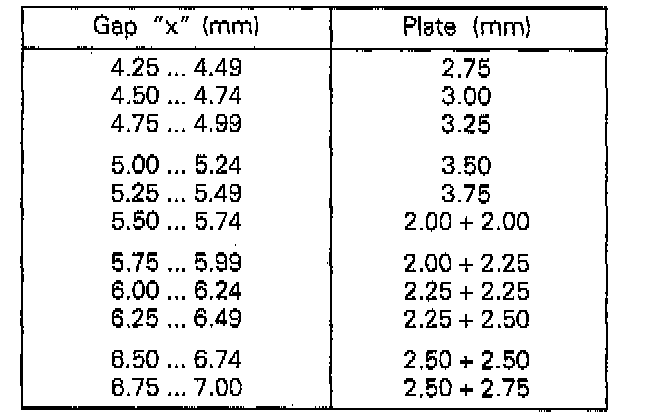

2ND and 4TH Gear Brake (B2)

COMPONENT NOTES AND INFORMATION
NOTE:
^ Install components to adjust 2nd and 4th gear brake -B2- without corrugated washer (item 11), without last outer plate (item 10) and without spring caps (item 6)
^ Assembling planetary gearbox, refer to Planetary Gearbox Disassembly/Assembly. Service and Repair
1 -Transmission housing
2 - Circlip
- For supporting tube
3 - Supporting tube -B2Length of -B2- with
- 5 inner plates 68.6 mm
- 6 inner plates 64.9 mm
- Quantity inner plates -B2-. Application and ID
- Insert so that notch locates on free wheel wedge
4 - Outer plate -B2-
- 3 mm thick
5 - Spring cap
- Install after installing first outer plate
6 - Spring cap
- Do not install when adjusting -B2-
- Install before installing last outer plate
7 - Spring
8 - Inner plate -B2-
- Quantity used. Application and ID
9 - Outer plate -B2-
- Always install 2 mm thick outer plates
- Quantity used. Application and ID
10 - Outer plate -B2-
- Do not install when adjusting -B2-
- 2 outer plates can be installed.
11 - Corrugated washer
- Do not install when adjusting -B2-
PROCEDURES
Calculating Thickness Of Last Outer Plate -A-

- The thickness of the outer plate is determined by gap "x, and is selected from table below.
Gap x = a - b - 3.2mm
A - Outer plate
NOTE: First outer plate -arrow- is always 3 mm thick
Calculating "a":

- Clutches installed, refer to Planetary Gearbox Disassembly/Assembly. Service and Repair
- Measure from pump flange/housing to last inner plate with depth gauge "A".
Example:
Reading for "a" = 30.2 mm
Calculating "b":

- Place straightedge "B" onto stator support (arrow) and measure with depth gauge "A" to gasket of pump flange.
Example:
Reading minus Straightedge Thickness equals Calculated size b
40.1 mm - 19.5 mm = 20.6 mm
Calculating and Selecting Thickness Of Last Outer Plate
Gap x = a - b - 3.6 mm
= 30.2 - 20.6 - 3.2 = 6.4 mm
2nd And 4th Gear Brake Table Of Plates:

- Determine thickness of outer plate according to table above:
- Determine thickness of outer plate according to table and obtain from parts supplier..
Two outer plates can be installed.